AVF – arteriovenous fistula
CLTI – chronic limb threatening ischemia
GSV – great saphenous vein
PTFE – polytetrafluoroethylene
Even with the widespread use of endovascular strategies to manage patients with chronic limb threatening ischemia (CLTI; i.e., patients with ischemic rest pain or tissue loss), surgical bypass remains an essential treatment modality. Single segment great saphenous vein (GSV) is the preferred conduit for infragenicular bypass given its superior patency,1 intrinsic humoral properties, and resistance to infection. However, prosthetic grafts undoubtedly have an important role in limb salvage for the proportion of the population that does not have autologous vein available to use as a conduit. From analyses of the Vascular Quality Initiative registry, this subset of patients without adequate vein may range anywhere from approximately 25% (among patients in need of tibial bypass for CLTI2) to 45% (among patients requiring any infrainguinal bypass for acute or chronic ischemia3).
Advances in patient selection, operative planning, and postoperative management have resulted in more aggressive and successful revascularization strategies. With improvements in the engineering of prosthetic grafts, there have also been modifications in the surgical technique used to construct these bypasses to distal popliteal and tibial arteries. This review discusses the current body of literature on the rationale, hemodynamics, and clinical outcomes of using prosthetic bypasses with distal vein patches/cuffs.
Though single segment GSV has been established as the preferred bypass conduit, there are a number of reasons why patients may not have suitable vein. This patient population includes those with: small caliber GSV less than 3-3.5mm; GSV that is fibrotic, sclerotic, thrombosed, or otherwise not of adequate quality; absent vein due to prior harvest for coronary or other peripheral revascularization; or a history of GSV ablation/excision for venous pathology. For patients without GSV, alternative conduits become increasingly important for limb salvage.
Expanded polytetrafluoroethylene (PTFE) was described in the 1970s as a prosthetic material that could be used for bypass to small-diameter vessels.4 However, this approach does not result in durable outcomes. From early experience with below-knee bypasses, prosthetic material alone results in 2-year patency rates less than 40%.5
Subsequent studies have indicated several potential mechanisms for these inferior results. Platelet affinity for the PTFE graft wall has been documented in the early postoperative period, which renders the graft inherently thrombogenic.6 Though heparin-bonded PTFE grafts have attempted to address this, significant improvements in long-term patency and limb salvage have been elusive. Furthermore, intimal hyperplasia results in stenosis of the distal anastomosis, predisposing the graft to thrombosis through a number of potential hemodynamic mechanisms.
The mode of failure for PTFE bypasses is another consideration. Drs. Clagett, Valentine, and colleagues described a greater propensity to present with acute limb threatening ischemia after occlusion of a PTFE bypass when compared to GSV (78% vs. 21%, respectively).7 Overall, this resulted in 28% of PTFE bypasses requiring emergent revascularization (versus 3% of occluded GSV bypasses), a 2-year primary patency of 32% for PTFE, and a subsequently inferior limb salvage rate (56% vs. 81%). We also investigated this phenomenon for long-segment superficial femoral artery covered stent grafts, in which the relative risk of presenting with acute limb ischemia was 27 times greater among patients with occluded covered stents compared to those treated with bare metal stents.8
These trends have been attributed to compromised distal outflow at the time that PTFE occludes.9 This is congruent with observations that the degree of ischemia following occlusion of a prosthetic graft is often greater than the patient’s baseline ischemic symptomatology prior to the index intervention.10 In this case, from a technical perspective, thrombectomy of the bypass and simple local revision of the distal anastomosis may not be sufficient for a durable result. These occlusions often require a bypass to a more distal target vessel or the use of endovascular adjuncts, including thrombolysis, to reestablish arterial outflow.
Along with poor patency rates and more acute presentations following bypass occlusion, PTFE independently has been characterized as an inherently thrombogenic material. This has been shown in early comparisons of PTFE-coated catheters and guidewires,11 in the setting of vascular access,12 and for peripheral intervention.13
Additionally, a deep wound infection following arterial reconstruction with a prosthetic graft represents a potentially devastating and life-threatening complication that has been associated with considerable morbidity and mortality. These infections have traditionally required debridement, complete graft excision, and extraanatomic revascularization through uninfected tissue planes. However, graft preservation strategies have emerged as a viable option for select patients who are stable, have patent grafts, and who are not infected with particularly virulent organisms.14 Infection-related complications of PTFE are undoubtedly associated with prolonged hospitalizations and numerous reinterventions.
To combat the limitations of prosthetic infragenicular bypasses, anastomotic techniques have been described to improve PTFE patency for those who lack suitable vein. Since 1979 when vein modification of the distal anastomosis was initially proposed by Siegman,15 these techniques utilize an intervening venous adjunct between the prosthetic graft and the smaller target artery. The goal in doing so is to primarily decrease intimal hyperplasia by addressing: 1) the significant compliance mismatch, and 2) the size discrepancy between the stiff PTFE conduit and the native recipient artery. In practice, this creates a larger anastomosis that is easier to technically construct, minimizes the amount of prosthetic that is directly in contact with the target artery, avoids compromising the caliber of the anastomotic outflow, and has the humoral benefits of the venous endothelium.
Stenosis due to intimal hyperplasia classically occurs 2-24 months postoperatively. This process involves the migration and proliferation of smooth muscle cells from the media into the intima, along with an accumulation of extracellular matrix.16 Since intimal hyperplasia has been linked to a number of mechanical factors that govern the blood flow through an anastomosis, optimizing the hemodynamics of the distal anastomosis is an important consideration.
The flow across a primary PTFE-arterial anastomosis is characterized by systolic velocity gradients that are higher toward the anterior wall of the recipient artery than the center of the vessel.17 As the flow of blood comes in contact with the posterior arterial wall directly opposite the hood of the graft, a stagnation point forms where the flow divides caudally into the recipient artery, and cephalad toward the heel of the anastomosis. This separation of flow results in turbulence near the heel of any anastomosis.18
This disturbed flow has a significant impact on wall shear stress (the tangential force per unit area at a given point on the vessel wall), stress gradients between different points along the anastomosis, and the oscillatory shear index (which is caused by the rapid change in the direction of shear stress during the cardiac cycle). Consequently, any shift in these parameters in either direction (either too high, or too low), can serve as a stimulus for intimal hyperplasia.19 These relationships, some of which are still theoretical and have yet to be fully elucidated, are summarized in Figure 1.
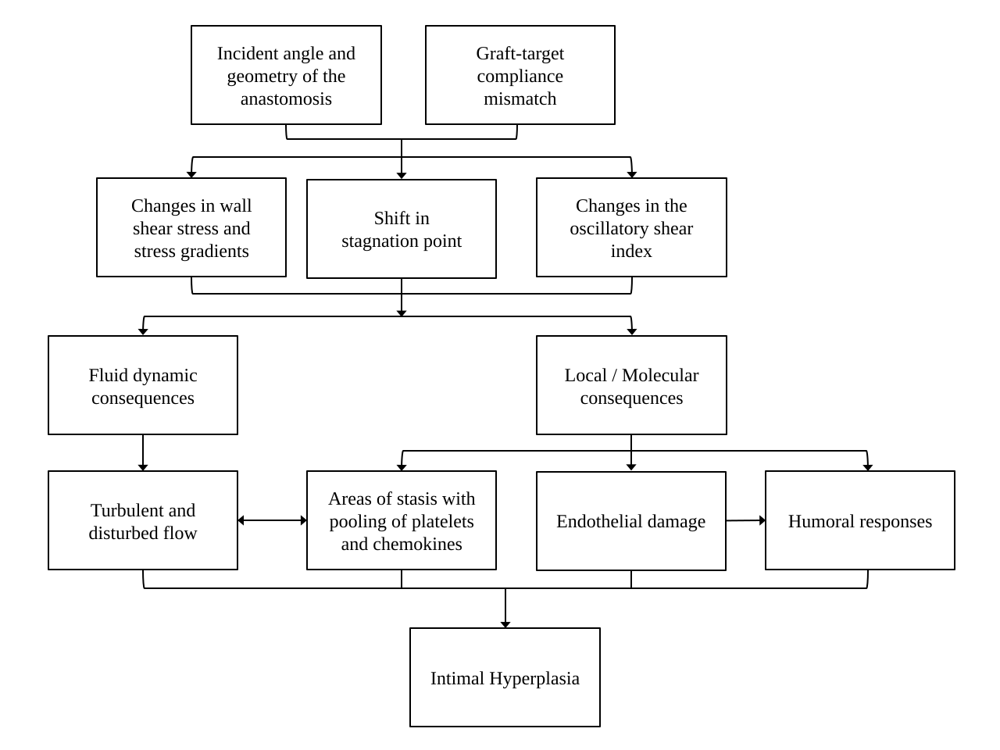
The significant compliance mismatch that exists between a rigid prosthetic graft and a native, small, infragenicular artery is the principal pathway implicated in the development of the hyperplastic response. This mismatch causes flow disturbances, resulting in mechanical endothelial injury and maximally high shear stress.20 Correspondingly, in vivo results show that intimal hyperplasia is usually concentrated at the suture line around a PTFE graft. Therefore, from a mechanical perspective, an intervening vein segment at the distal anastomosis primarily helps to regulate intimal hyperplasia by two main mechanisms: 1) minimizing the compliance mismatch between the graft and the target artery, and 2) redistributing the hyperplasia to the PTFE-vein suture line and away from the artery itself.17
Importantly, hemodynamic factors are not the only cause of intimal hyperplasia. A host of humoral stimuli have similarly been implicated in the pathophysiology of the hyperplastic response.16,21 In a series of controlled experiments, Kissin et al. identified that bypasses with vein cuffs: 1) are associated with a lower total burden of intimal hyperplasia; 2) concentrate the hyperplasia at the PTFE-vein interface, thereby sparing the target artery; and 3) upregulate cytokines (including transforming growth factor-beta1, platelet-derived growth factor-BB, and smooth muscle alpha-actin) that may modulate they hyperplastic process. This suggests a mechanism by which the venous endothelium itself regulates the development of intimal hyperplasia (Figure 1).
In a study of the American College of Surgeons National Surgical Quality Improvement Program (NSQIP) database, Nguyen et al. assessed early 30-day graft failure rates among different types of infrapopliteal bypass configurations. Single segment GSV was associated with the best short-term patency, with a 30-day failure rate of 7.5%. There was no statistically significant difference in patency among single segment arm vein conduits (4.3%), spliced vein conduits (5.6%), and prosthetic bypasses with distal vein patches/cuffs (9.8%). Composite grafts (those composed of both prosthetic and a venous interposition) fared the worst, with a 30-day failure rate of over 15%.22
Furthermore, a recent assessment of the Vascular Quality Initiative by Dalmia et al. showed that the 1-year primary patency of prosthetic tibial bypasses with a distal vein cuff (69%) was higher than either single segment arm vein (60%), or spliced vein conduits (55%).23 A contemporary 7-year review of cases from the University of California, San Francisco, also reported favorable primary and secondary patency rates for distal vein patches on the below-knee popliteal artery when compared to either spliced vein grafts or cryopreserved GSV conduits.2
In addition to favorable patency, bypasses with PTFE and distal vein patches have been associated with shorter operative times (4.4 hours vs. 6.1 hours) and fewer reinterventions than spliced vein conduits.22,24 Our cost-effectiveness analysis also identified PTFE as the most cost-effective option, associated with low median costs and an acceptable number of postoperative ambulatory years when compared with spliced vein, cryopreserved allografts, and a strategy of primary amputation.25 Therefore, even if prosthetic graft is required, if a patient is willing and is otherwise a candidate for revascularization, limb preservation should be aggressively pursued.
In other words, in the absence of single segment GSV, if spliced vein represents the “Cadillac” of infragenicular bypass conduits, PTFE with a distal vein patch is analogous to the “Chevy” option, providing acceptable clinical outcomes at a relatively low cost.
In addition to favorable long-term patency for vein patches, our group investigated their association with the severity of ischemia at the time of graft occlusion. We reviewed all cases of infragenicular PTFE bypasses performed at our institution between 2009 and 2016.26 All were performed for an indication of CLTI. Of the 93 PTFE bypasses performed, 39 were created with a distal vein patch. After adjustment, there were significantly fewer major adverse limb events among the vein patch cohort compared to bypasses performed with PTFE alone (odds ratio 0.4, p=0.04). Interestingly, distal vein patches also had a decreased absolute rate of acute limb ischemia at the time of bypass occlusion (30% vs. 43%). This is consistent with clinical observations that distal vein modification of prosthetic conduits helps protect the native arterial runoff at the time of graft occlusion, thereby allowing the bypass to remain amenable to revision (Figure 2).
Overall, the body of literature describing outcomes following infragenicular bypasses with PTFE and distal vein patches/cuffs is largely retrospective and therefore suffers from the usual limitations of this study design: heterogeneous patient demographics, inconsistent outcomes of interest, lack of control groups, and the inability to reproducibly control for confounding variables. Even though there are very few head-to-head comparisons of the different configurations of vein patches/cuffs for patient without adequate GSV, the available data indicates that distal vein modification for prosthetic bypasses is associated with acceptable clinical outcomes, while also helping to modulate the severity of recurrent ischemia in the event of bypass failure.
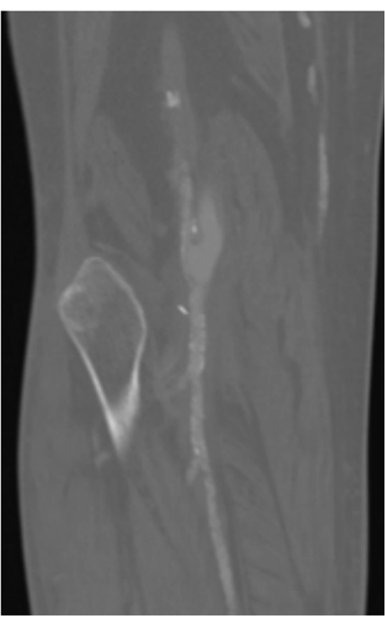
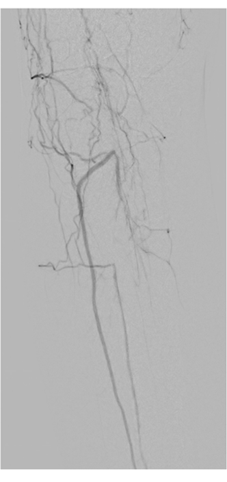
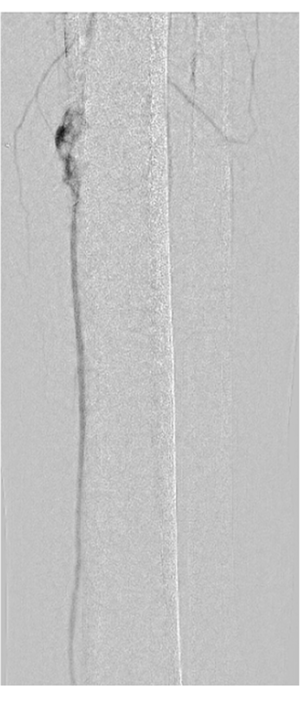
| Characteristic | Linton Vein Patch | Taylor Patch | Miller Vein Cuff | St. Mary’s Boot |
|---|---|---|---|---|
| Year described | 1984 | 1988 | 1984 | 1991 |
| Highest level of clinical evidence availableᵃ | Case series | Case series | Systematic review; Randomized controlled trials | Case series |
| Relative difficulty to construct | + | ++ | +++ | ++++ |
| Length of autologous vein segment needed | 2-4 cm | 5-6 cm | 2-3 times as long as the arteriotomy (~6cm) | ~6 cm |
| Number of suture lines required to complete the anastomosis | 2 | 2 | 3 | 3 |
| Prosthetic graft in direct contact with the target artery? | No | Yes, at the heel | No | No |
| 1-year primary patency | 74-80%29,31 | 71-88%33,53 | 50-80%37,39 | 65-96%24,42 |
| Overall advantages | - Technically easy to construct - Low incident angle - Favorable hemodynamics - Requires the shortest vein segment |
- Low incident angle - Favorable hemodynamics |
- Continuous forward flow across anastomosis | - Hypothesized to be similar to the Taylor patch |
| Overall disadvantages | - May create a small patch if the vein segment harvested is not at least 3.5mm in diameter | - Long segment of vein is required - Possible to constrict anastomosis at the graft-artery-patch interface - Risk of intimal hyperplasia at the heel |
- Long segment of vein is required - Steep incident angle - Turbulence and high shear stress within the anastomotic reservoir - Difficult to construct in tight spaces |
- Long segment of vein is required - Steep incident angle - Difficult to construct in tight spaces - Hemodynamics not well described |
ᵃ Refers specifically to currently available studies assessing outcomes following infragenicular PTFE bypasses with and without the respective vein patch/cuff configuration.
Regardless of the specific configuration of the distal vein patch/cuff that is created, there are a number of considerations that are important in identifying, harvesting, and preparing the vein segment that will be used as the patch.
In addition to cephalad portions of GSV, other vein segments that may be of adequate caliber for the patch may include the caudal (i.e. ankle) GSV, cephalad lesser saphenous vein, arm vein segments (particularly the basilic vein), and the external jugular vein. The use of the femoral vein has also been described.27 Vein mapping in the operating room is used to assess and confirm the segment of vein that will be used as the patch. From our experience with creating distal vein patches, we recommend using a vein segment that has a caliber of at least 3.5mm, as veins with smaller diameters result in a minimal cuff of venous tissue after the anastomosis is complete. In this case, the small cuff of vein does not allow for adequate expansion of the patch under arterial pressure.
Dissection of the vein segment is performed sharply to avoid thermal injury to the vein. Direct manipulation of the vein is also kept to a minimum to avoid mechanical trauma. Following the dissection, we leave the vein in vivo until the arterial exposures and the tunneling are complete. After systemically heparinizing the patient, we suture ligate the caudal end of the vein. A small olive-shaped metal syringe tip is inserted and secured in place with a free silk tie, definitively marking the caudal end of the vein segment. After it is harvested, flushing it or storing it temporarily in vein solution (containing heparin and papaverine) may be helpful. Should the vein need to be stored for a period of time, short-term cold storage at 4 degrees Celsius can be considered as it has been associated with improved cell viability and preservation of venous wall structure.28
To optimize the hemodynamics of the distal anastomosis, a low incident angle is required (meaning that the graft should be as parallel to the target artery as possible). This is controlled by several factors, one of which is the tunnel of the graft. When tunneling superficially, the graft dives into the respective compartment of the leg at a relatively acute angle to reach the target vessel. This is particularly true if the target is the below-knee popliteal or a proximal tibial artery. Therefore, anatomic tunneling can be considered to allow for a more direct and parallel path to the recipient artery. Additionally, to maintain that low incident angle, the graft is beveled in a way that allows it to lay gradually onto the target artery. A short bevel, on the other hand, risks kinking the hood of the graft. As such, a generous arteriotomy is favored in order to: 1) accommodate both the graft as well as a patch, and 2) allow the target artery to accept the gradual/long bevel of the bypass graft.
When creating a vein patch, the harvested vein segment is brought into the field in a reversed orientation such that the syringe tip is at the heel-side (i.e. cranial side) of the arteriotomy. Not only does the metal syringe tip help to mark the orientation of the vein, it acts as a weight to maintain the vein in place as it is opened longitudinally. At this point, if valves are found within the vein segment, these are resected prior to suturing the patch in place, taking caution to avoid traumatizing the venous endothelium. The vein patch is sutured to the arteriotomy using a double-anchor suture line, starting distally on the arteriotomy. As the suture line is brought close to the proximal end of the arteriotomy, the vein is cut to length, releasing the metal syringe and allowing it to be passed off the field. Even with the vein sufficiently attached to the arteriotomy, suction should be temporarily clamped to avoid inadvertent trauma or loss of the vein. The patch is then completed prior to making the venotomy for the PTFE anastomosis.
Each technique for creating a distal vein patch or cuff places an intervening segment of vein between the prosthetic bypass and the target artery. This section highlights the construction, advantages, disadvantages, and clinical outcomes of the most common configurations. Key aspects of these different configurations are summarized in the Table.
For its simplicity and hemodynamic advantages, our preferred distal vein patch technique is the Linton patch, initially described by Batson in 198429 and later popularized by Neville et al. in 1997.30 Named after the femoral patch angioplasty technique initially detailed by Drs. Linton and Darling, this technique has the advantage of being technically familiar to all vascular surgeons. For this patch, as originally described, a 2-4cm segment of vein is harvested and opened longitudinally. A similarly sized arteriotomy is made on the target vessel, to which the vein patch is sutured using 7-0 polypropylene suture in a single suture line. A venotomy is then made in the proximal two-thirds of the patch to which the PTFE is anastomosed using 6-0 polypropylene suture (see Figure 3a). Under arterial flow, the patch expands in a cuff-like configuration, tapers gradually toward the toe, and allows the graft to rest at a favorable angle that can be controlled using the length of the patch and the cut angle of the prosthetic graft (Figure 4a).
Dr. Neville’s expanded series on distal vein patches reviewed the results of 270 infragenicular bypasses between 1995 and 2008. Approximately 50% of the cohort had diabetes, 21% had end-stage renal disease, and 91% of the bypasses were performed for CLTI. Primary patency rates at 1-, 2-, and 4-years were: 79%, 75%, and 51%, respectively. Corresponding limb salvage rates were similarly favorable: 80%, 78%, and 67%, respectively.31 Furthermore, a retrospective cohort study comparing tibial bypasses performed with GSV (n = 50) and PTFE with a distal vein patch (n = 62) were also comparable: 1-year primary patency of 86% vs. 75%; and limb salvage rates of 86% vs. 87%, respectively.32
The Taylor patch technique for tibial anastomoses was developed in 1982, with long-term results reported by the early 1990s.33As originally described, a 3-4cm arteriotomy is made on the target vessel. The PTFE graft is beveled by creating a short, 1cm, “U”-shaped slit posteriorly, which is directly anastomosed with 6-0 polypropylene suture to the proximal portion of the arteriotomy, creating a narrow angle between the graft and the artery (see Figure 3b). The suture line is run along the entire graft-artery interface and then a shod is placed on each strand. The graft is then incised anteriorly, extending 2cm proximal to the heel of the anastomosis. This too is fashioned in a “U” shape by trimming the anterior walls of the incised graft. A vein patch measuring about 5-6cm in length is then sutured in place to close the remaining defect. This is done by first suturing the patch distally on the arteriotomy using six to eight interrupted 6-0 or 7-0 polypropylene sutures, followed by a continuous suture that runs the remaining length of the patch until the graft-artery-patch junction is reached. At this point the suture is tied to that which was previously tagged with a shod, one is cut, and the remaining suture is used to complete the patch as it extends onto the anterior surface of the graft. Importantly, the widest part of the patch is placed at the graft-artery-patch interface so that the anastomosis is not narrowed at this junction (Figure 4b).
Along with the relatively long segment of vein required to construct a Taylor patch, another disadvantage is that the heel of the anastomosis is constructed by directly connecting PTFE to the target artery. Theoretically, the benefit from an interposed segment of venous endothelium at this area would be lost, thereby increasing the risk of intimal hyperplasia at this interface. Further, as alluded to earlier, the suture lines that meet at the junction of the artery, the graft, and the vein patch have the potential to constrict the patch at this point.
Taylor’s initial series included a total of 256 bypasses, 66% of which were either to the below-knee popliteal (n=86) or to a tibial vessel (n=83). Among tibial bypasses, the 1-, 3-, and 5-year cumulative patency rates were reported as 74%, 58%, and 54%, respectively.33 Yeung et al. reviewed 44 patients who underwent infragenicular bypasses with a distal Taylor vein patch and also observed a 1-year primary patency rate of 71%. Limb salvage for this cohort during this follow-up time was 95%.
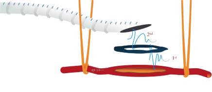
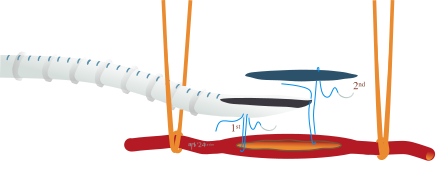
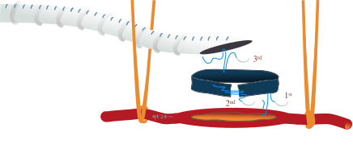
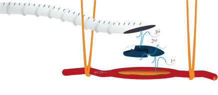
Miller formally reported on the vein cuff technique in 1984.34 This cuff requires a vein segment that is at least 3-3.5mm in diameter and two to three times as long as the arteriotomy on the target artery. The vein segment is then opened longitudinally and a running suture is used to sew the long edge of the vein circumferentially around the arteriotomy. A second suture line then secures the vein to itself, creating an ovoid cuff of venous tissue to which the prosthetic graft is directly anastomosed (Figure 3c). In this configuration, since the vein is opened longitudinally prior to fashioning the cuff, the width of the vein cuff is approximately twice the diameter of the harvested vein segment. This creates a tall rim of autologous tissue between the prosthetic graft and the target artery (Figure 4c).
Potential disadvantages of this technique include the fact that it may be difficult to construct in tight anastomotic spaces. From a hemodynamic perspective, the anastomotic reservoir of the Miller cuff has been associated with velocity gradients that produce continuous forward flow, unlike that of conventional anastomoses that experience a period of flow reversal during diastole.35 Though this is thought to potentially confer protection against thrombosis, the Miller cuff is also associated with significant turbulence and the highest shear stresses among the different configurations.17 This is likely related to the steep incident angle formed between the graft and the patch (i.e., the graft is not parallel to the target artery near the anastomosis). Conversely, analysis of the Linton and Taylor patches result in flow patterns similar to a conventional, primary anastomosis between a PTFE graft and an artery.17
Miller’s initial experience with this technique included 114 infragenicular bypasses (including 21 tibial targets), with an 18-month patency rate of 72%.34 However, Tyrrell and colleagues reported a 33% occlusion rate within the first 30 days of the index tibial bypass in their series of 30 femorotibial grafts.36 This early failure rate is likely due to a combination of both technical factors in the construction of the cuff as well as the unfavorable hemodynamics of the anastomotic reservoir created by the vein collar itself.
There have been two randomized trials performed to assess whether the Miller cuff improves patency of lower extremity PTFE bypasses. Stonebridge et al. published the results of the Joint Vascular Research Group, in which 261 PTFE bypasses were randomized to be performed with (n=133) or without (n=128) a distal vein cuff.37 About 90% of each cohort underwent a bypass for an indication of CLTI. Distal targets included the above knee popliteal artery (57%), below knee popliteal artery (37%), and tibial arteries (6%). Among patients who underwent a bypass to the below-knee popliteal artery, the 2-year outcomes for those with a distal vein cuff were: a primary patency rate of 52%, a secondary patency rate of 59%, and a limb salvage rate of 84%. This is compared to 29%, 35%, and 62% for patients without a vein cuff, respectively. The differences in primary patency and limb salvage between these cohorts were indeed statistically significant. However, there was no difference in outcomes in the cohort that underwent above-knee popliteal bypasses.
Subsequent longer-term follow-up of the study also revealed a statistically significant difference in 3-year cumulative patency for below-knee popliteal bypasses with a vein cuff (45% vs. 19%).38 The Joint Vascular Research Group concluded that there was benefit for both patency and limb salvage when a vein cuff is used for prosthetic bypasses to the below-knee popliteal artery. The study was underpowered to assess results for tibial bypasses, and again no clinical benefit was appreciated for a distal vein cuff on the above-knee popliteal artery.
In contrast, the 2010 Scandinavian Miller Collar Study (SCAMICOS) randomized 352 patients undergoing infragenicular PTFE bypasses to be performed with or without a distal vein cuff. The authors did not identify a statistically significant difference in 3-year primary patency (26% vs. 43%) or limb salvage (64% vs. 61%) for below-knee popliteal bypasses using PTFE with and without vein cuffs, respectively.39 This was also the case for distal tibial bypasses (3-year primary patency of 20% vs. 17%, and a limb salvage rate of 59% vs. 44%). One aspect of this study that limits its direct comparison to other studies is that the cohort was comprised of 60% women, with a minority having diabetes (36%), renal disease (10%), or a history of smoking (32%).
Considering these trials, a Cochrane review in 2013 concluded that though underpowered, there is some evidence that a distal anastomotic vein cuff for infragenicular bypasses (particularly to the below-knee popliteal artery) improves patency.40
The St. Mary’s boot technique is named after St. Mary’s Hospital in London where it was first described by Tyrrell and Wolfe in 1991. It was developed to address the turbulence associated with the Miller cuff and to avoid the direct suture line between PTFE and the recipient artery, as is found in the Taylor patch.41 Here, a 6cm segment of vein is harvested and again opened longitudinally. An arteriotomy is made on the target artery. The vein is then anastomosed to the distal apex of the arteriotomy using 7-0 polypropylene suture to form the anastomotic toe (Figure 3d). After the toe has been secured in place, the rest of the vein is then sutured along the circumference of the arteriotomy, similar to the Miller cuff. As this venous-arterial suture line nears completion, the redundant venous segment is excised before completing this portion of the cuff. Again similar to the Miller cuff, a second suture line then secures the vein to itself. Finally, a segment of the cuff nearest to the proximal arteriotomy is excised (Figure 3d). This increases the size of the subsequent anastomosis between the PTFE conduit and the vein collar (Figure 4d). Though this technique aims to improve upon both the Miller cuff and the Taylor patch, it requires a long segment of vein and may be technically challenging to construct, particularly in tight anastomotic spaces.
This configuration was studied by Kreienberg and colleagues. A retrospective review of 59 infragenicular PTFE bypasses between 1987 and 1998 revealed a 3-year primary patency rate of 38%, secondary patency of 47%, and a limb salvage rate of 92%.42 The group subsequently studied this configuration in a prospective manner, in which the distal venous boot was associated with 2-year secondary patency and limb salvage rates of 59% and 85%, respectively.24
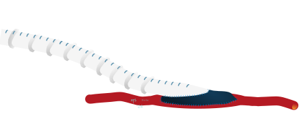
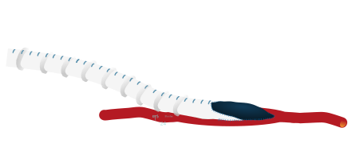
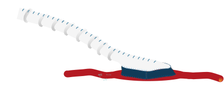
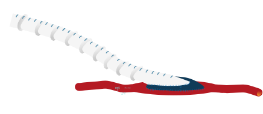
For patients with severely compromised arterial runoff to the foot, a distal arteriovenous fistula (AVF) may be constructed. Theoretically, a distal AVF can help to maintain bypass patency by decreasing outflow resistance and maintaining flow velocities throughout the graft. Though exceedingly rare, potential complications of a distal fistula may include: arterial steal syndrome, venous hypertension, and a precipitation of high-output cardiac failure.
There are multiple ways in which the AVF may be fashioned, the most common configuration being an AVF with a common ostium between the target tibial artery and its corresponding vein. The PTFE conduit is then anastomosed to this ostium, either with or without an intervening vein patch. As such, a distal AVF has many of the same technical considerations as a patch/cuff.
Kreienberg et al. retrospectively compared PTFE bypasses with a St. Mary’s boot to those performed with a distal AVF. Though there were no significant differences in primary or secondary patency over three years, the boot was associated with higher limb salvage rates (92% vs. 76%, respectively).42
Two randomized controlled trials have studied prosthetic bypasses with a distal Miller vein cuff with and without a concomitant distal AVF.43,44 Both resulted in statistically similar patency and limb salvage rates among the two configurations. Therefore, the use of a distal AVF in the setting of markedly disadvantaged outflow may allow these patients to have clinical results similar to those that have better runoff to the foot at baseline. Conversely, if a patient has an adequate outflow vessel that is of acceptable caliber and is patent into the foot, there does not seem to be any added benefit to constructing a distal AVF.
Precuffed PTFE grafts have been fabricated in order to replicate the geometry of a distal vein patch. They are currently available in the United States as the Distaflo® Bypass Graft from BD (Becton, Dickinson and Company; Franklin Lakes, NJ). A randomized prospective trial by Penneton et al. compared 47 infragenicular bypasses performed with a precuffed PTFE conduit to 44 bypasses that used a standard PTFE graft with distal vein modification (the specific type of vein patch/cuff was left to the discretion of the surgeon).45 There was no difference in 1- or 2-year primary patency, secondary patency, or limb salvage rates. A subsequent case-control study similarly showed no statistical difference in 3-year outcomes between these two conduits.46
Though these clinical results are promising and argue for a technically less demanding alternative to a distal vein patch, hemodynamic evaluation of the precuffed graft identified not only areas of increased flow separation and turbulence in the hood and toe of the graft, but also chaotic velocity vectors near the heel of the anastomosis during diastole.18 Both of these findings may predispose this configuration to a greater degree of intimal hyperplasia. Considering that PTFE makes direct, circumferential contact with the arteriotomy for these prefabricated grafts, the toe of the anastomosis remains exposed to the significant compliance mismatch that remains a major driver for intimal hyperplasia.
Another described option is to use a segment of occluded superficial femoral artery.27 A portion is resected, opened longitudinally, an endarterectomy is performed, and this is then used as a patch. Though this loses the potential benefit of having an intervening segment of metabolically active endothelium, it can help reduce the compliance mismatch and optimize the hemodynamics at the distal anastomosis.
Anecdotally, a distal patch fashioned from bovine pericardium is also an alternative. Though clinical outcomes have not been formally investigated, bovine pericardium handles well, is familiar to vascular surgeons, and can theoretically help mitigate the compliance mismatch between PTFE and the target vessel when no segment of vein is available for a patch.
Antiplatelet therapy in the setting of peripheral artery disease has well-described cardiac and cerebrovascular protective effects. In the setting of infragenicular bypass, the CASPAR trial randomized patients to receive aspirin alone or dual antiplatelet therapy with aspirin and clopidogrel. Though there was no significant difference in postoperative outcomes in the overall cohort, subgroup analysis suggested that dual antiplatelet therapy significantly reduced the rate of the composite endpoint (comprised of graft occlusion, revascularization, major amputation, and death) among those with a prosthetic bypass.47 This is consistent with an analysis of the Vascular Quality Initiative in which Belkin et al. identified significantly improved primary and secondary patency rates among patients with prosthetic infrainguinal bypasses who were on postoperative dual antiplatelet therapy.48
With respect to anticoagulation, the COMPASS trial reported improved cardiovascular benefits from a regimen of both aspirin and low dose rivaroxaban.49 Additionally, the VOYAGER PAD trial revealed improved outcomes following lower extremity revascularization on the same regimen.50 Notably, among patients in VOYAGER PAD who underwent surgical revascularization, the addition of low dose rivaroxaban to antiplatelet therapy significantly decreased the rate of combined major adverse limb/cardiovascular events regardless of whether a venous or prosthetic conduit was used.51 Importantly, a COMPASS subgroup analysis also revealed that the addition of low dose anticoagulation can decrease the risk of major cardiovascular events even among those who have already undergone a lower extremity amputation.52
Taking this all together, for patients undergoing an infragenicular PTFE bypass with a distal vein patch, surgeons should consider adding either clopidogrel or low dose rivaroxaban to a patient’s baseline aspirin regimen. Furthermore, if a patient is started on low dose anticoagulation and ultimately undergoes a future lower extremity amputation, we consider continuing the combination of aspirin and low dose rivaroxaban for its cardiovascular benefits.
In the absence of single segment great saphenous vein, PTFE is necessary for limb salvage. The use a distal vein patch/cuff in this setting ameliorates the shortcomings associated with a direct PTFE anastomosis to an infragenicular artery, accounting acceptable patency and limb salvage rates. This cost-effective management strategy also performs favorably when compared to alternative venous conduits, including single segment arm vein and spliced vein grafts. Distal vein modification for a bypass to the above-knee popliteal artery, however, does not seem to add benefit and is therefore not routinely required. Postoperative management should include the addition of either a second antiplatelet agent or low dose anticoagulation.